<div class="appctrl-row">
  <button
    [disabled]="showLoadingIndicator || vispApp.disabled"
    class="tool-tile app-tone"
    [class.disabled-btn]="vispApp.disabled"
    [class.running]="hasRunningSessions"
    (click)="vispApp.name === 'tratt' ? selectAppOptions() : launchProjectInApp()">

    <span class="tile-icon accent" [ngSwitch]="vispApp.name">
      <svg *ngSwitchCase="'tratt'" viewBox="0 0 24 24" aria-hidden="true"><path d="M4 5h16v11H9l-5 4z"/><path d="M8 9h8M8 12h5"/></svg>
      <svg *ngSwitchCase="'artic'" viewBox="0 0 24 24" aria-hidden="true"><path d="M4 20h4L19 9a2.8 2.8 0 0 0-4-4L4 16z"/><path d="m13.5 6.5 4 4"/></svg>
      <svg *ngSwitchCase="'jupyter'" viewBox="0 0 24 24" aria-hidden="true"><path d="m8 7-5 5 5 5M16 7l5 5-5 5M14 4l-4 16"/></svg>
      
    </span>

    <span class="tile-copy">
      <span class="tile-label">{{ btnTitle }}</span>
      <span *ngIf="vispApp.subtitle && !(vispApp.name === 'jupyter' && statusMsg.length > 0)" class="tile-subtitle">{{ vispApp.subtitle }}</span>
      <span *ngIf="statusMsg.length > 0" class="tile-status">
        
        {{ statusMsg }}
      </span>
    </span>

    <svg class="tile-chevron" viewBox="0 0 24 24" aria-hidden="true"><path d="m9 6 6 6-6 6"/></svg>
  </button>

  <button class="session-close-button" *ngIf="hasRunningSessions" [disabled]="showLoadingIndicator" (click)="close()" aria-label="Close running session">
    <i class="fa fa-times-circle" aria-hidden="true"></i>
  </button>
</div>
